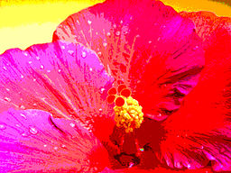

We are trying to simulate the visual appearance of a hand-drawn cartoon style image using cel shading. This approach is used in frequently in video games and cartoons to give the appearance of a comic or cartoon without having to hand-draw animations frame-by-frame. Examples of technique in video games include Ōkami and The Legend of Zelda: Breath of the Wild. It is also used in television shows Knights of Sidonia and Archer. Cel shading simulates this visual style by discretizing transitions between light and dark areas rather than a smooth transition. The second component of this will be to trace outlines of the 3D model. This simulates the outlines that are typically found in cartoons or comics. The challenge for this part will be detecting edges and also creating convincing renders of the outlines. These outlines should vary in thickness depending on the lighting or texture of the subject.
1. What we plan to deliver:
In order to have a succussful project we must implement some form of cel shading along with outline drawing. Implementing cel shading will involve discretizing transitions between light and dark areas. One potential pitfall of this approach would be creating a posterized look rather than a hand-drawn look.
|

|
2. What we hope to deliver:
If all goes well, we hope to implment an adaptive outline detection algorithm that will draw outlines of varying thickness depending on the lighting conditions to more accurately simulate hand-drawn outlines. For example, outlines for unlit areas are usually heavier than they are for brightly lit areas.
{kind=link}